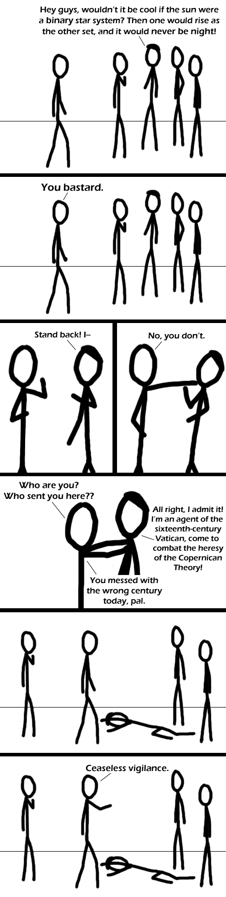

Comic JK 273
When I Feel Like It
⇤
<
?
>
⇥

⇤
<
?
>
⇥
Forum
.
RSS
.
Digg
.
Facebook
.
Reddit
.
Twitter
.
Stumbleupon
Enter your thoughts on number 273 here. Please, no spamming, trolling, or reeking. the last xkcd was unusually good... but this comic almost measures up. almost only counts in horseshoes and hand grenades...and flying drones >and webcomics. this is better than 90% of xkcd's strips, but had the misfortune of being posted after one that fits in the top 10%. The Vatican had access to time travel in the sixteenth century?! Then how come we ended up having the 1980s? >Another person with time travel made the 80s happen so that he could have a clueless sidekick >>How'd you know it was me? >>> Marty? Is that you? Although, the vatican didn't care less about what model of the solar system was used, until somebody decided to insult someone fairly high up... So, it was more personal reasons than anything else. >Galileo Galilei once told the pope: "Your mother's so fat, she's bigger than the sun; Which the earth revolves around btw.